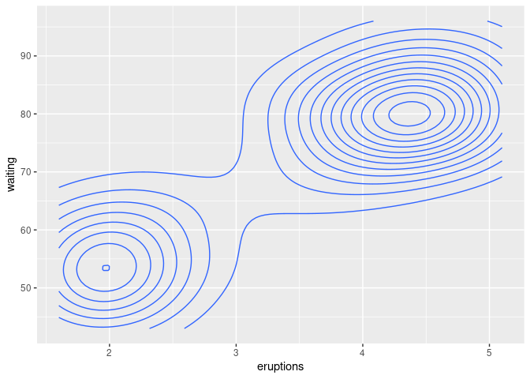

The goal of ggdatasaver is to automatically save the data associated with your plots for you to share as supplementary material. Other people can then use that data instead of digitising your plots. Because only the data already being published as a plot is saved, there should be fewer privacy or legal complications.
Installation
You can install the development version of ggdatasaver like so:
remotes::install_github("eliocamp/ggdatasaver")Example
ggdatasaver works automatically with knitr. The only thing you need to do is to define the directory where the data is saved with
ggdatasaver::save_plot_data_in("plot-data")Then, just create your ggplot2 figures as always. Using a chunk label is encouraged because it will be used to name the file.
library(ggplot2)
ggplot(mtcars, aes(mpg, disp)) +
geom_point() +
geom_smooth()
#> `geom_smooth()` using method = 'loess' and formula 'y ~ x'
After you knit, you will have a (possibly new) directory with zip files with the data of each plot.
fs::dir_tree("plot-data")
#> plot-data
#> └── mpg-1.zipInside that zip file there will be a csv file for each layer.
# Unzip the contents of mpg.zip into a temporary directory.
dir <- file.path(tempdir(), "mpg")
utils::unzip("plot-data/mpg-1.zip", exdir = dir)
fs::dir_tree(dir)
#> /tmp/RtmpUnBAEX/mpg
#> ├── GeomPoint.csv
#> ├── GeomSmooth.csv
#> └── layout.csvThe data of each layer is only the one used to draw the geometry. For example, GeomSmooth.csv has the coordinates of the fit and some other aesthetic information
| x | y | ymin | ymax | se | flipped_aes | PANEL | group | colour | fill | size | linetype | weight | alpha |
|---|---|---|---|---|---|---|---|---|---|---|---|---|---|
| 10.40000 | 465.4006 | 380.6647 | 550.1365 | 41.25442 | FALSE | 1 | -1 | #3366FF | grey60 | 1 | 1 | 1 | 0.4 |
| 10.69747 | 455.8367 | 378.8003 | 532.8731 | 37.50585 | FALSE | 1 | -1 | #3366FF | grey60 | 1 | 1 | 1 | 0.4 |
| 10.99494 | 446.3856 | 376.3085 | 516.4627 | 34.11767 | FALSE | 1 | -1 | #3366FF | grey60 | 1 | 1 | 1 | 0.4 |
| 11.29241 | 437.0484 | 373.1735 | 500.9234 | 31.09807 | FALSE | 1 | -1 | #3366FF | grey60 | 1 | 1 | 1 | 0.4 |
| 11.58987 | 427.8262 | 369.3829 | 486.2694 | 28.45362 | FALSE | 1 | -1 | #3366FF | grey60 | 1 | 1 | 1 | 0.4 |
| 11.88734 | 418.7198 | 364.9320 | 472.5076 | 26.18707 | FALSE | 1 | -1 | #3366FF | grey60 | 1 | 1 | 1 | 0.4 |
And the line can be reconstructed exactly from these data.
ggplot(smooth, aes(x, y)) +
geom_ribbon(aes(ymin = ymin, ymax = ymax, fill = I(fill), alpha = I(alpha))) +
geom_line(aes(colour = I(colour), size = I(size)))
(Setting plot_data_dir to NULL will suppress data-saving for that chunk.)
As you can see, only the coordinates of each geom are saved, not the underlying data. For a more dramatic example, take this controur plot of the Old Faithful Geyser Data.
ggplot(faithful, aes(x = eruptions, y = waiting)) +
geom_density_2d()
(Now there are two zip files in the plot-data directory
fs::dir_tree("plot-data")
#> plot-data
#> ├── faithful-density-1.zip
#> └── mpg-1.zip.)
ggdatasaver will save the coordinates that defined the contours, not the observations from which they were computed.
dir <- file.path(tempdir(), "faithful-density")
utils::unzip("plot-data/faithful-density-1.zip", exdir = dir)
density <- read.csv(file.path(dir, "GeomDensity2d.csv"))
ggplot(density, aes(x, y)) +
geom_path(aes(group = group))This makes it safe to share these data, as it doesn’t include any more information than what’s in the plot you are already sharing.
The panel specification of each plot is saved in layout.csv, which holds the location (ROW and COLumn) information of each panel as well as the value of the variables
ggplot(mpg, aes(displ, cty)) +
geom_point() +
facet_grid(drv ~ cyl)
dir <- file.path(tempdir(), "mpg-facets")
utils::unzip("plot-data/mpg-facets-1.zip", exdir = dir)
layout <- read.csv(file.path(dir, "layout.csv"))
head(layout)
#> PANEL ROW COL drv cyl SCALE_X SCALE_Y
#> 1 1 1 1 4 4 1 1
#> 2 2 1 2 4 5 1 1
#> 3 3 1 3 4 6 1 1
#> 4 4 1 4 4 8 1 1
#> 5 5 2 1 f 4 1 1
#> 6 6 2 2 f 5 1 1Use cases
Accessibilty
Academic journals almost never have any infrastructure that allows for alt text for figures. For blind people, having access to the raw data is better than nothing.
With the data they could print a tactile version (for simple plots), compute statistics to get a better sense of the relationships, or just read the raw data. For fitted curves, which usually are not adequately described in text, they could get the data, fit the curve and read the curve parameters.
Reproducibilty
An important aspect of reproducibility is having access to data, but this is easier said than done. Huge data is expensive to store and serve, and many types of data carry privacy concerns (such as patient data) or licencing issues (like secret data). Another barrier to data sharing is organising it in useful way (see The Turing Way’s Guide to Reproducible Research).
While not perfect, sharing the small snippets of data that are the coordinates of plot geometries can be a good compromise. These data are generally small and already in a tabular format, so it’s technically easy to share in a repository or as supplemental material. And because is data that is already implicitly shared as an image, it doesn’t carry privacy and licencing concerns. (I’m not a lawyer, so don’t take that as legal advice.)
And even when the raw data is shared, sharing also the plot data can be useful for researchers that want to reproduce or reanalise small chunks of your results but don’t want or can’t download the original data and run the code.
Limitations
ggdatasaver has only been tested on simple plots although there’s no reason it should work work with more complicated ones. patchwork is supported but not cowplot.
When using ggdatasaver plots are built twice; once when saving the data and once when drawing the plot. This shouldn’t be an issue most of the time unless your plot requires heavy computation.
Only data from ggplot2 plots are exported. Base plots or lattice plots are not supported; only because I don’t know how to go about it. If you have any idea of how to implement ggdatasaver for base plots, open an issue and let’s talk about it!